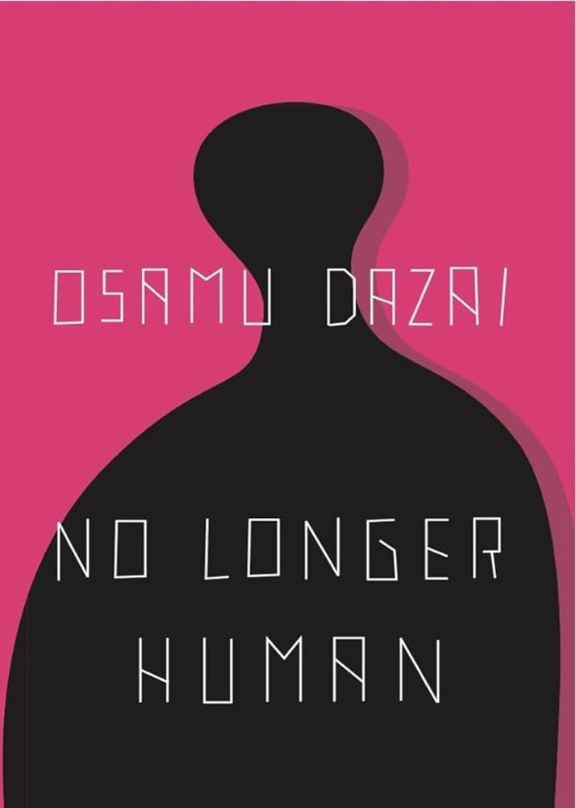
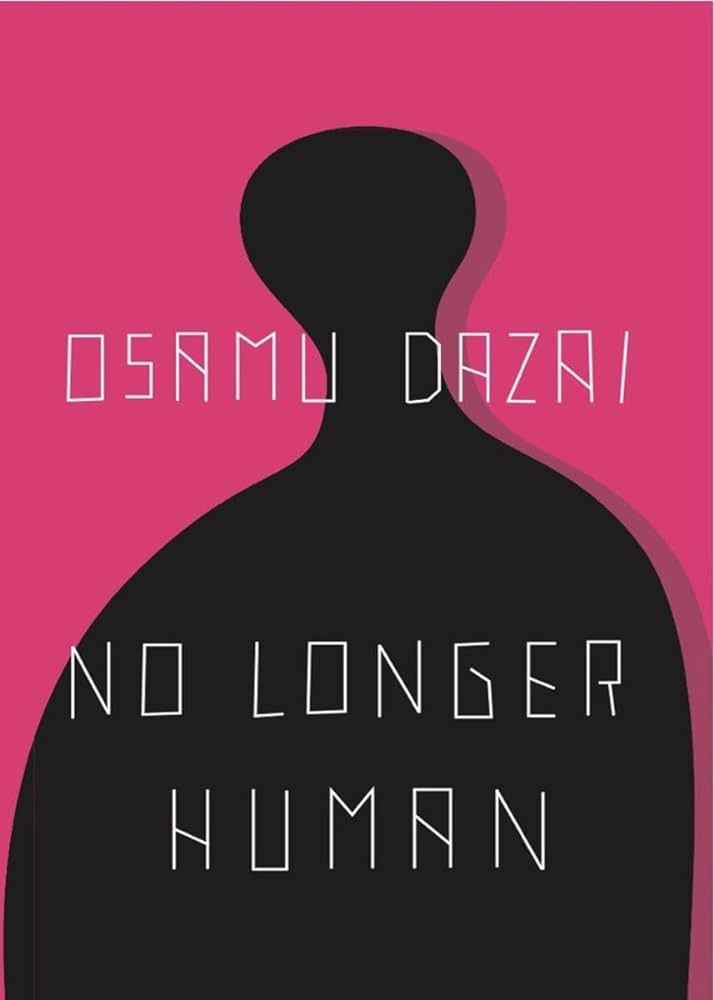

Discovering Worlds Through Pages
Reading has been a passion of mine for a very long time. Whether it's reading into a fantasy series, exploring thrillers and mysteries, or even delving into thought-provoking non-fiction, books have always been and will always be my escape from reality into new worlds.
The image above is a very early image that shows my manga collection which has grown with the addition of books as well. As you can see from the image above I have a few books ranging into different categories. What is not shown in this image are some other books I have such as Hunger Games, many works from Osamu Dazai, and various other authors. I am also one that enjoys manga. Among these, my favorites would have to be the Red Rising series, No longer Human, as well as Berserk.
 
